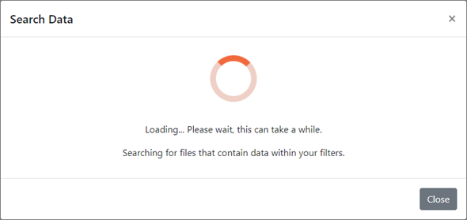
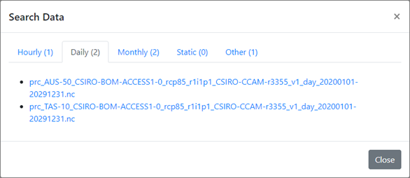
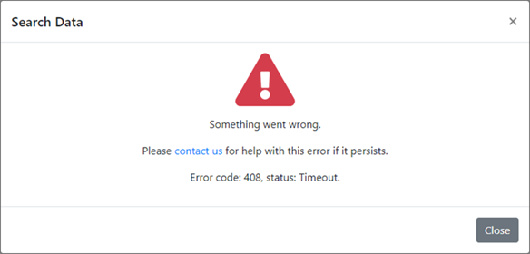

In the 3rd and final step, you may review all of your selected filters for mistakes, and will also be informed of logical errors if any have occurred, such as forgetting to select an area, or selecting a start date that comes after the selected end date.
All selected filters will be summarised in this section, allowing you to check for errors or being informed of logical errors preventing you from searching.

Once satisfied with the filters you have chosen, you can proceed by clicking on the Search Data at the bottom to commence the searching operation for your files.
After pressing the Search Data button, a pop-up will appear and will load while waiting for search results to return.
Please wait patiently while the application searches through the Climate Futures’ database for data matching your filters, keeping in mind the more variables you have selected the longer your search will take.
Once searching is complete all files found containing data within your filters will be displayed on screen in lists, separated into tabs by time resolution.
The time resolution you selected in step 2 will be the default tab selected, but other tabs can be viewed in case you view other found results.
The tabs display a number in brackets such as “(2)”, this indicates how many results there are in that tab.
The “Other” tab contains files found that do not fit into hourly, daily, monthly or static, a time resolution to often find in the “other” tab for example is 3 hourly.
Left click on one of the blue list items in order to begin downloading it, your browser may automatically save it in your downloads folder or ask you to specify a save location.
It is important to note that files returned will contain data within your search filters, but will likely also contain data form outside your filters too. Extra data will often be outside of your time range or outside of your area selection, all other data (variables, ensemble, etc) should be an exact match to your filters.
Files retrieved follow a filename formatting scheme, as outlined below:
Unfortunately, errors may occasionally occur, if this happens, try your request again, if the error persists then please contact us.
You can contact us for troubleshooting by pressing on the contact us Hyperlink on the error popup.
Or you can access this URL for more information
If your error has error code and status information displayed please inform us of these values when contacting us.
